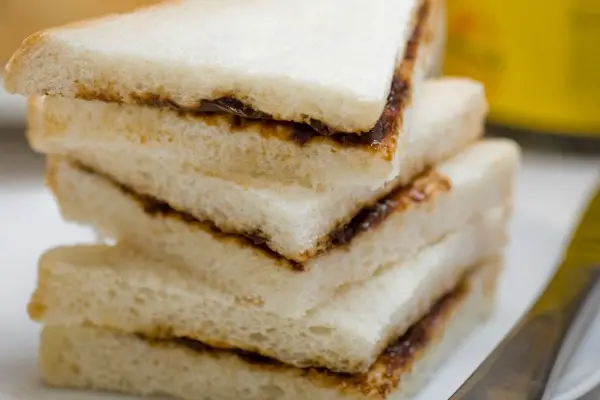

Vegemite Sandwich

Sandwich with vegemite and butter.
Ingredients
- Two slices of sandwich bread.
- Butter
- Vegemite
Steps
- Lay out the bread, grab a butter knife.
- Spread butter across one side of both pieces of bread.
- Spread vegemite across buttered sides of the bread. Beginners should aim for a brown color mixed with the butter. Advanced eaters may paint the bread with vegemite until it's the same color as it was out of the jar.
- Close the coated sides of the bread together to finish the sandwich.